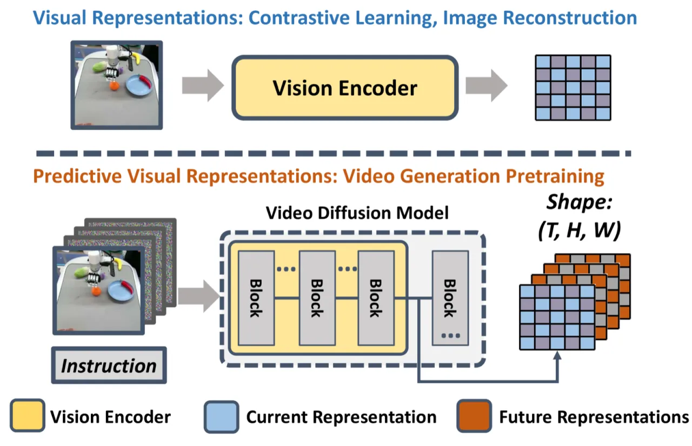
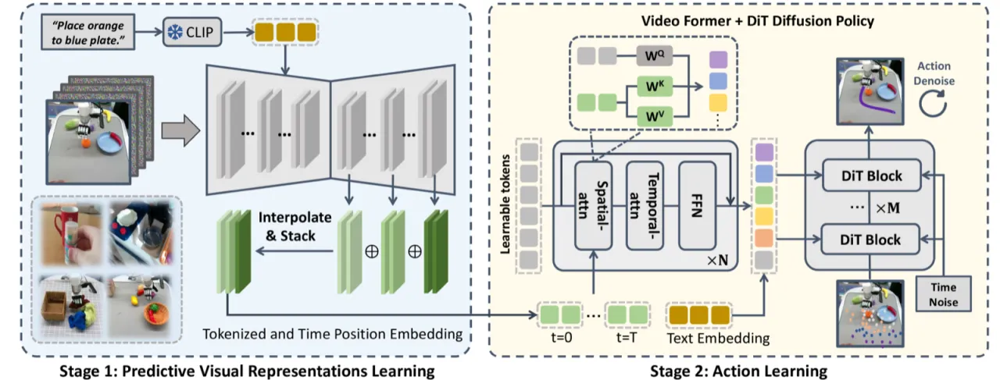
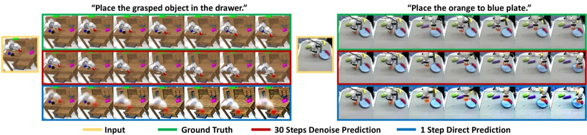
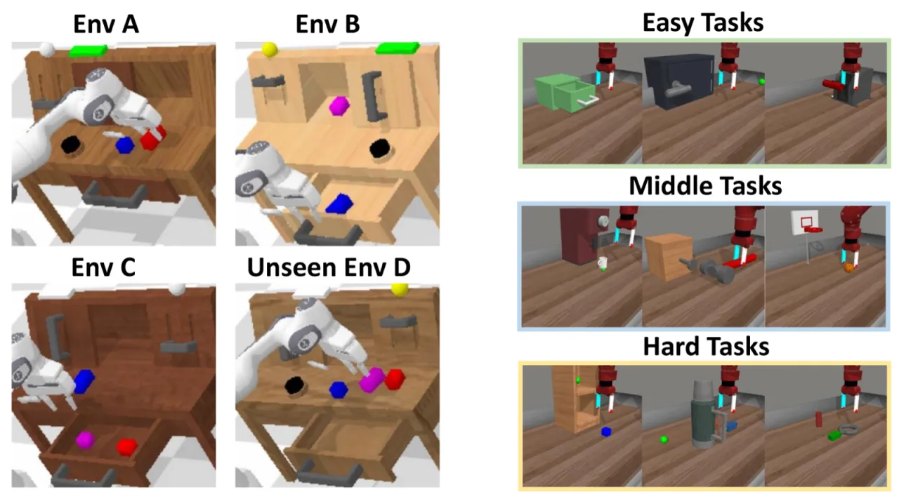
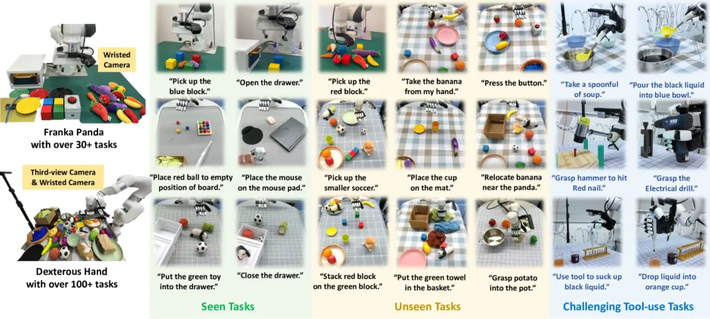
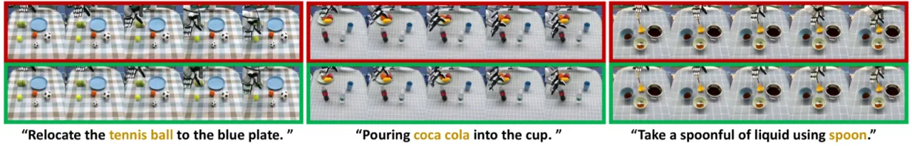

VPP（Video Prediction Policy）将视频扩散模型（Video Diffusion Model, VDM）中蕴含的预测性视觉表征用于机器人策略学习，使 policy 同时感知当前状态与未来动态。在 CALVIN ABC→D 泛化基准上，VPP 比先前 SOTA 提升 18.6%；在真实灵巧手操作任务中成功率提升 31.6%。
当前机器人视觉表征方法主要依赖单帧图像或两帧图像学习，忽视了具身任务中至关重要的动态信息。视频扩散模型（VDM）在大规模互联网视频上预训练，隐含地理解了物理世界的演化规律，但如何将这种"未来预见"能力转化为 robot policy 的视觉表征，尚无有效方案。
"We hypothesize that VDMs contain both current static information and predicted future dynamics, which can provide more comprehensive guidance for robot policy learning."

VPP 分两阶段：首先在机器人与人类操作数据上微调视频扩散模型，使其具备文本引导的视频预测能力（TVP）；然后以 TVP 的内部 latent 特征作为视觉编码器，通过 Video Former 聚合时空信息，最终由 Diffusion Policy 输出动作序列。

以 Stable Video Diffusion（1.5B 参数）为基础，通过 cross-attention 引入语言条件，在三类数据集上联合训练：
TVP 充当"视觉编码器"，约 140ms 完成一次前向推理，提取多个 up-sampling layers 的 latent 特征并拼接为 F_p。 Video Former 利用可学习 token 通过 spatial attention 与 temporal attention 对 F_p 进行时空聚合，压缩多视角信息，无需逐帧生成完整视频（相比 SuSIE 快 3.2×）。 Diffusion Policy Head 通过 cross-attention 将聚合表征与语言指令结合，生成连续的动作序列，以去噪扩散过程输出 6-DoF 末端执行器轨迹。

在四类平台上系统评估 VPP：仿真基准 CALVIN（跨环境泛化）与 MetaWorld（50 任务多任务操作），以及真实硬件 Franka Panda 机械臂（30+ 任务）和灵巧手（100+ 任务）。与 RT-1、Diffusion Policy、GR-1、RoboUniview、SuSIE、Vidman 等基线对比。
| Benchmark | Prior SOTA | VPP（本文） | 相对提升 |
|---|---|---|---|
| CALVIN ABC→D 平均完成任务数 | 3.35 (RoboUniview) | 4.33 | +29.3% |
| CALVIN 10% 数据 | 1.41 (GR-1) | 3.25 | +130.5% |
| MetaWorld 平均成功率 | 57.4% (GR-1) | 68.2% | +10.8% |
| Franka 已见任务成功率 | 52% (GR-1) | 85.6% | +64.6% |
| 灵巧手 已见任务成功率 | 32% (GR-1) | 74.9% | +134.1% |
| 灵巧手 工具使用任务 | 15% (GR-1) | 68% | +353.3% |



在 CALVIN 基准上的关键消融（以平均完成任务数衡量）：
| 配置 | CALVIN 平均任务数 | 相对完整版本 |
|---|---|---|
| 完整 VPP | 4.33 | — |
| 去掉互联网数据 | 3.97 | −8.3% |
| 去掉 SVD 预训练（随机初始化） | 1.63 | −62.4% |
| 去掉 Video Former（改用所有帧特征） | 3.86 | −10.9%，推理速度慢 3.2× |
| 以 VAE 替换 VDM | 2.58 | −40.4% |
| 以 VC-1 编码器替换 | 1.23 | −71.6% |
| 仅用最后一层特征 | 3.60 | −16.9% |
消融结果揭示：SVD 大规模预训练是最关键的性能来源（去掉后性能下降 62.4%）；Video Former 对效率与性能均有重要贡献；多层特征融合优于只用最后一层。
作者指出，单步前向预测"do not yield clear video"，生成的预测帧较为模糊。尽管如此，实验表明其 latent 特征已足够编码物理演化信息，对策略学习仍有指导价值。但若任务需要高精度视觉预测，此局限可能影响表现。
TVP 单次前向推理约需 140ms，对控制频率有影响。虽然相比 SuSIE 等需要多步去噪的方法快 3.2×，但对于需要高频控制（>10Hz）的任务（如高速避障、接触丰富操作）仍是瓶颈。
VPP 的性能高度依赖 Stable Video Diffusion 在海量互联网视频上的预训练（消融去掉 SVD 预训练后性能下降 62.4%）。这意味着方法对计算资源要求较高，难以在资源受限场景下从头训练或快速迁移到全新领域。